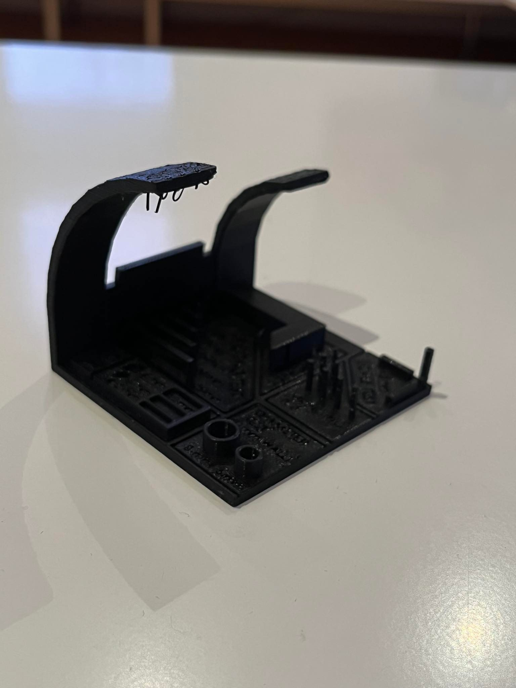
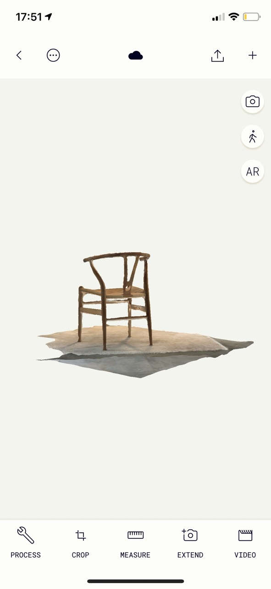

Project 3
3D printing
The objective
The objective of this project was to design an object you can 3D print (additive manufacturing) but cannot milled (subtractive manufacturing) as well as 3D scanning an object.
Preparation
The first thing I did was look for inspiration for what I want to create. I googled “small 3D printing ideas” since we were only allowed to use 100 grams of material for our object. I browsed through various ideas and ended up wanting to make a bottle opener. I was a little worried the PLA material would not be strong enough to handle the force of opening a bottle so I googled ideas on how to prevent the opener from breaking and came across a design I though was really smart. The design contains a hole for a coin and the coin is then used to open the bottle. Here and here you can view the design I found online.
In order to use a Prusa 3D printer, I had to download Prusa Slicer. Here you can download the software.
Execution
I decided to draw my object in Fusion 360. I drew a parametric outline of my bottle opener which you can see, along with measurements, in the picture below:
Next, I extruded the sketch out 10 mm and drew a new sketch on the bottle opener for the hole for the coin. I decided to use the 5kr coin since that is all I could find and measure. The measurements of the coin were: diameter=25mm, thickness=1.5mm and I created the hole in the same ones. Here you can see a picture of the bottle opener after extruding and making the hole.
The final Fusion 360 drawing looked like this:

3D Printer Test - Group Project
Before printing our object we had to print a small test which checks the limitations of the printer, f.ex. a bridging test, an overhang test, a diameter test and a hole test. The test we decided to use we found on the internet. Here you can open the site on which the 3D test file was found. Down below is a photo of the test:
We downloaded the STL-file from the website and opened in Prusa Slicer. In Prusa Slicer we set the settings to the particular way the picture below shows and exported to an SD-card.
Then we inserted the SD-card in the 3D printer, changed the material to PLA and waited for it to finish printing the test. Down below you can see pictures of the finished test. After examining it we estimated that the 3D printer can handle printing in a maximum steep of 75 degrees. As can be seen in the pictures, when printing at the steepest angle (80 degrees) the printer does not follow the design in the file. The largest distance between two foundations we tested was 25mm and the printer did not have a problem printing that.



I was mostly interested in seeing if it could handle printing 25mm with foundations on each side, because that is the diameter of the coin and therefore of the hole in the opener. This did not seem to be a problem from the test.
3D Printing in FabLab
I exported the Fusion drawing as a 3ML file and opened it in Prusa Slicer, just like for the 3D test. I decided to use Generic PLA and the type of printer I used is Original Prusa i3. The settings in the software were exactly the same as for the 3D test. I exported the file onto an SD card and inserted that into the printer.

Finished product
Here you can see pictures of the finished product after the coin has been inserted. There were no problems with creating this object. I was afraid it could not handle the force of openening a bottle and would break but it works fine.
3D Scanning
Preparation
In order to 3D scan an object I had to download an app on my phone. I looked at projects from students who scanned an object last year and finally decided to download an app called "Polycam". I saw from their previous projects that 50-100 images could create a pretty accurate 3D scan. I decided to scan something quite large and with some detail and ended up scanning a chair. I took 81 pictures of the chair and let the app process them. Down below you can see the app before scanning as well as pictures of the final scan.

Here is a video of the scan:
Workload
| Time | Work |
|---|---|
| 1 hour | Conceptual work |
| 2 hours | Fusion360 |
| 1 hour | 3D test |
| 1 hour | Starting the printing process |
| 1 hour | 3D scanning |
| 7 hours | Updating the website |
| 13 hours | Total time |